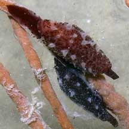
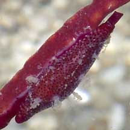
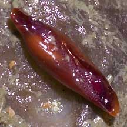
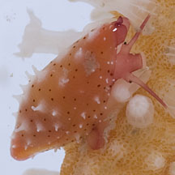
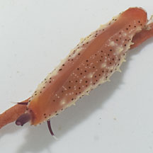
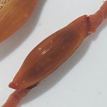

|
|
| shelled snails text index | photo index |
| Phylum Mollusca > Class Gastropoda > Family Ovulidae |
| Red
spindle cowrie awaiting identification* Family Ovulidae updated Sep 2020 Where seen? This tiny elongated snail is often seen on sea fans on our Northern shores. Features: 1-1.5cm. Shell thin and usually a dull orange or red and not so pointed at the ends. Foot and siphon red or black. The mantle is usually the same colour and pattern as the sea fan with tiny red or dark dots and little white or pale protrusions that mimic the polyps of the sea fan. Tentacles red or orange with white tips. Several similar looking spindle cowrie species include: Cuspivolva queenslandica, Crenavolva traillii and Phenacovolva rosea. |
 East Coast, Jun 06 |
 Chek Jawa, Aug 05 |
 Underside. Chek Jawa, Aug 05 |
|
 Changi, Jul 12 |
 Changi, Jun 12 |
 Changi, Jun 12 |
*Species are difficult
to positively identify without close examination.
On this website, they are grouped by external features for convenience of
display.
| Red spindle cowries on Singapore shores |
On wildsingapore
flickr
|
| Other sightings on Singapore shores |
|
References
|